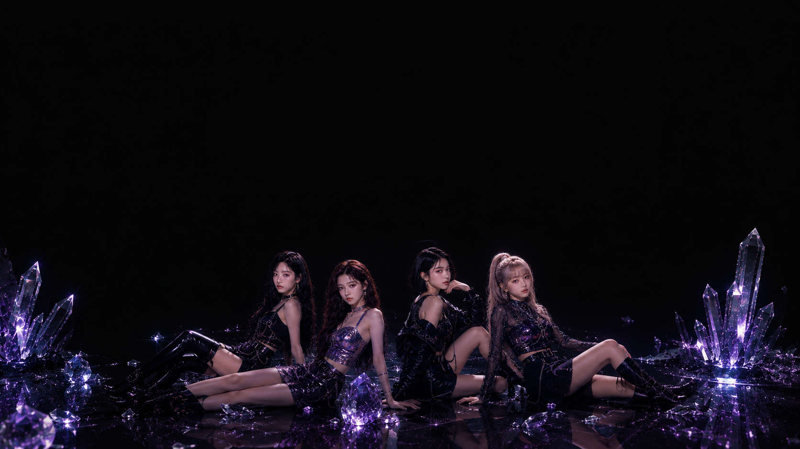
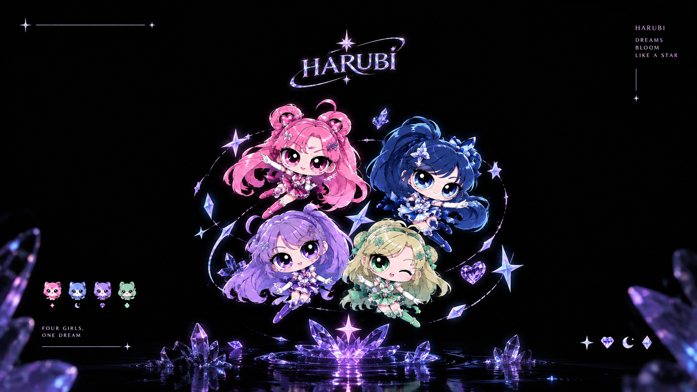
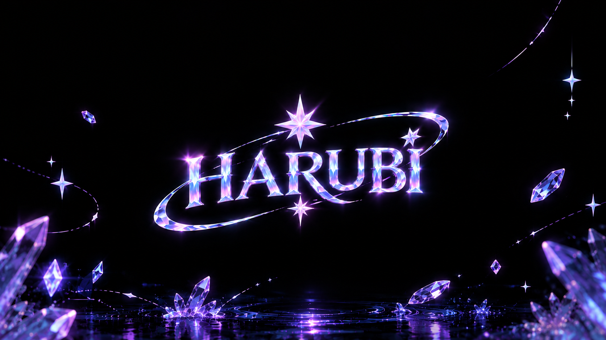
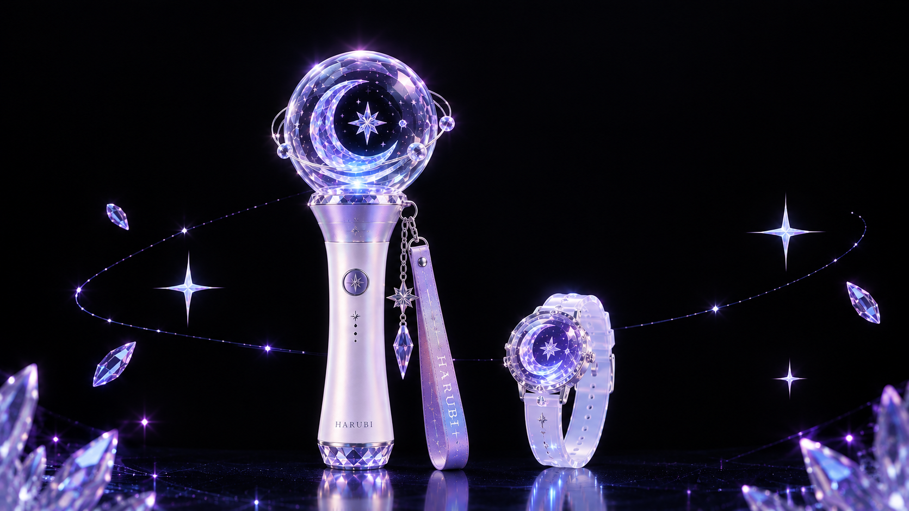

PROJECT 01 / AI CREATIVE
HARUBI
AURORA — TITLE & VISUAL CONCEPT
AI 기반 가상 아이돌 그룹 HARUBI의 첫 번째 미니 앨범을 기획하고 콘셉트와 비주얼 아이덴티티를 디자인한 프로젝트입니다.
앨범의 세계관과 비주얼 아이덴티티를 기획하고, 커버 아트워크와 캐릭터 비주얼을 제작했습니다.

HARUBI
GROUP VISUAL & MEMBER CONCEPT
FOUR GIRLS, ONE DREAMHARUBI의 정체성을 담은 4인 멤버 비주얼 콘셉트입니다.
각 멤버의 개성을 살린 스타일링과 퍼플 크리스탈, 빛의 오브제를 결합해 몽환적이고 신비로운 분위기를 연출했습니다.
서로 다른 네 가지 매력이 하나의 세계관 안에서 조화를 이루도록 구성하고, HARUBI만의 독창적인 그룹 아이덴티티를 시각적으로 완성했습니다.

HARUBI
CHARACTER DESIGN
CHARACTER VISUALHARUBI의 세계관과 멤버별 개성을 담은 캐릭터 디자인 프로젝트입니다. 핑크, 블루, 퍼플, 민트 컬러를 각 멤버의 시그니처 컬러로 설정하고, 헤어스타일과 의상, 액세서리 등의 요소를 활용해 캐릭터별 차별화된 매력을 표현했습니다. 반짝이는 크리스탈과 별빛 모티프를 더해 앨범의 몽환적인 분위기를 유지하고, 네 캐릭터가 하나의 그룹으로 자연스럽게 연결되도록 디자인했습니다.

HARUBI 로고 아트워크

HARUBI 굿즈 디자인
